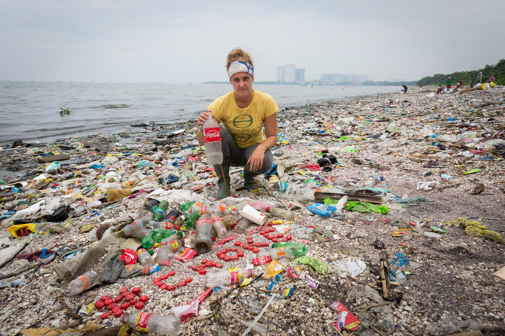
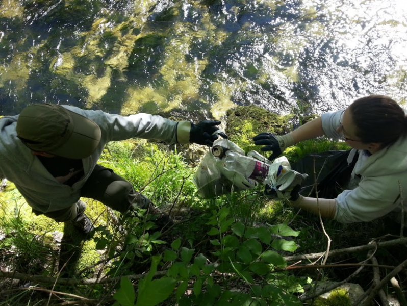

Earth sana in corpore sano
Society produces more and more Energy
Human have gradualy been less and less physical: hunter/trapper, farmer, workers and novadays digitalized works. In the meantime, it turns out food has been more and more easy to get. We saturate of energy.
While sport is a fairly ealthy activity, the lost of energy is a pity. Worst, going to the gym room does not collect that energy but in addition needs energy to make those sport machine active. This man-power could be use for other purposes.
Society produces more and more Waste
Waste appeared in the begining of 20th century. Before that, most of human production were reused: from animal bones and skin to human feces. However novodays, the waste is far from being a profitable industry.
We all are aware that industry produces way too much plastic packaging. While most people pay attention to put thoses wastes into trash, some do not. The reasons of this lack of care of packaging is unknown and might be related to education, mood or loss of attention. However what is clearly identified is the reason why industry uses such amount of packaging: this ease customers experience.
Eco-Sport: Best of Two Worlds
Let's say every jogger would gather every waste he finds in a plastic bag. This would make it's practice way more fun, and also it's energy would be used efficiently. In addition let's say people would see that jogger gather those things, I bet a few proportion (children in particular) would adopt this practice. Worst case, then would not be so prone to leave rubbish liying.
There is so many healthy sports to practice in town, forest, sea, river and so on and each might be turned in eco-sport! I have right now no idea what eco-friendly gesture a boxer might have...
Comments
Comments powered by Disqus